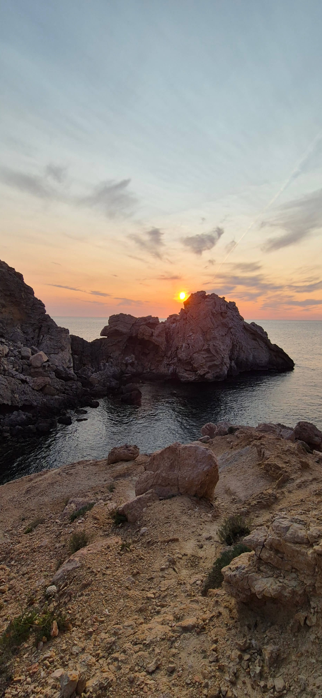
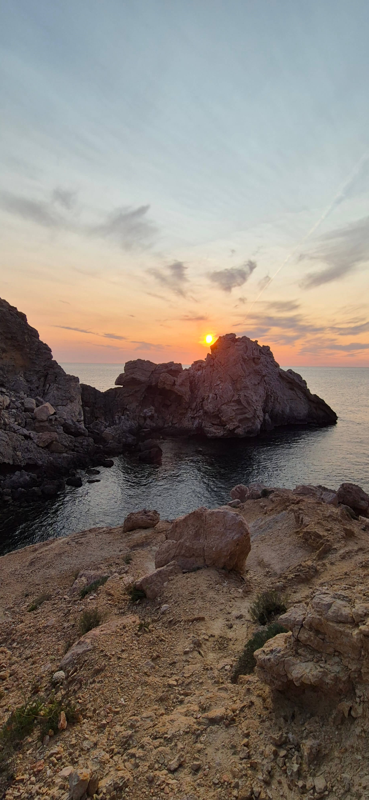

Mi amor:
Quiero decirte tantas cosas pero comenzare por lo mas importante que es agradecerte por aparecer en mi Vida ..
desde que llegaste cambiaste mi vida totalmente, me levantaba y acostaba contento por haber hablado o salido con vos
siempre emocionado por saber cuando seria la próxima vez que te vería y hoy en día sigo sintiendo lo mismo
quiero que sepas lo mucho que Te Amo y que cada día lo hago mas y mas.. Lo Agradecido que estoy por tenerte a mi lado
Estar con vos me hace muy Feliz, disfruto mucho todos los momentos que compartimos, las miles de charlas, las miles de risas
y que nos podamos contar todo, Amo como sos .. tu personalidad, como me haces sentir cuando estoy con vos de verdad me siento
cómodo y en paz, y eso es algo que valoro y te agradezco muchísimo amor y yo siempre voy a querer el doble para vos
de las cosas buenas que vos me das a mi ..
Mi deseo es que sigamos creciendo juntos, aprendiendo uno del otro y construyendo nuestra relación para que ambos seamos cada día mejores. ..
yo se que de mi parte me falta aprender muchas cosas pero te juro que esfuerzo y voluntad para ser mejor jamás faltaran
quiero hacerte muy feliz .. tanto como vos me lo haces a mi!
No miento cuando te digo que te amo, que sos el amor de mi vida y quiero pasar el resto de mi vida con vos ..
jamás me había sentido tan seguro de algo en mi vida, de que quiero todo con vos y voy a luchar al máximo para conseguirlo
quiero poder hacerte tan feliz como vos lo haces conmigo.
Quiero que tengas la certeza de que siempre voy a Cuidarte, a Respetarte y Amarte . Sos lo mas importante para mi, mi Prioridad
Lo nuestro para mi es un regalo, es un tesoro que prometo cuidar y valorar siempre..
Gracias por ser vos ..
Te amo Corazon ..
 
